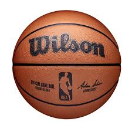
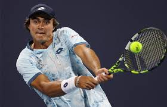

MAJOR FOOTBALL LEAGUES FINAL RESULTS
It marked the culmination of the 2023 Rugby World Cup and was played between New Zealand and defending champions, becoming the first nation to do so.[3] South Africa became the first team to ever win back to back Rugby World Cup tournaments away from home, with Siya Kolisi the first ever captain to accomplish the away double.
read more

BASKET BALL FINAL RESULT
.une 5: NBA Finals 2025 presented by YouTube TV Game 1 on ABC. June 8: NBA Finals 2025 presented by YouTube TV Game 2 on ABC. June 11: NBA Finals 2025 presented by YouTube TV Game 3 on ABC. June 13: NBA Finals 2025 presented by YouTube TV Game 4 on ABC.Mar 19, 2025
read more
